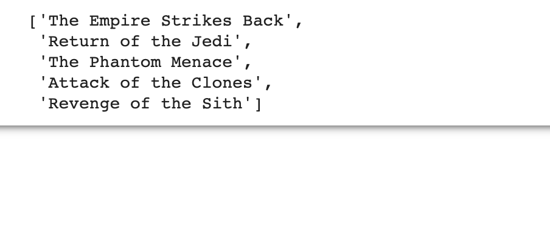

Star Wars API & Request
Requests is one of the most popular libraries that helps retrieve data from the Internet. I will utilize the Star Wars API, which includes information about all characters from Stsr Wars, and Request to collect online data in Python and perform data wrangling and analysis.
Loading Data with Request
First, we take a look at Request and download the data of the first person in the database. By giving the link of first person and convert the returned values to json format, we successfully retrieved information about Luke Skywalker.
import requests
one = requests.get('https://swapi.dev/api/people/1')
char = one.json()
char
Notice that the API only returns the information in the current page passed in the request function. In order to retrieve all characters from database, a for loop that iterates over all non-empty pages will be applied.
Getting All Characters from Star Wars
The following code shows how to download the information about each person and then transform into a complete list.
By initiating an empty list and a pending the results of each request to that list, You’ll be able to get an entire list of all people appeared in the Star Wars API.
instance = requests.get("https://swapi.dev/api/people/")
all = list()
while instance.json()["next"]:
all += instance.json()['results']
instance = requests.get(instance.json()['next'])
all += instance.json()['results']
In order to better understand the retrieved information, I transformed the J some format into a panda dataframe using the “json_normalize” function. Below a preview of what the date it looks like.
import pandas as pd
df = pd.json_normalize(all)
df.head()
Query to Find the Oldest
Perfect! Now that we have the data set, we can go ahead and start some interesting analysis. Here we hope to find the name of the oldest person.
In the world of Star Wars, the way they record the time is by ABY or BBY, which means “After Battle of Yavin” / “Before Battle of Yavin”. We do not need to worry about this, because all people in our dataset are classified as BBY.
birth = df["birth_year"]
import numpy as np
birth = birth.str.replace('BBY','').replace('unknown',0).astype('float')
df["age"] = birth
df.sort_values(by=['age'], ascending=False).head(1)
Then we could do a simple data cleaning by removing the BBY in the “age” columnm, transform string formatted numbers into double, and replace missing values with 0.Lastly, by performing a sort on the age column in a descending fashion, you’ll get the line of the olderst person - Yoda! that explains why he is so wise.
What Movies Does He Appear in?
Now that we have Yoda, As somebody who has never watch Star Wars movies before, I am really interested in finding out what movies he appeared in. However, our current dataset only shows a list of available urls to retrieve the films information. So we need to construct a for loop, and then use request to get the title from the information retrieved using these URLs.
films = [x for x in df.sort_values(by=['age'], ascending=False).head(1)["films"]][0]
film_names = [requests.get(i).json()['title'] for i in films]
film_names
I also concatenated all the responses into a list. We can see that Yoda appeared in The Empire Strikes Back, Return of the Jedi, The Phantom Menace, Attack of the Clones, and Revenge of the Sith.

If you want to find out more about the process in detail. Here is detailed process ans source code on my Github.